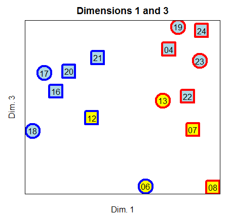

Research archive
Language Documentation
Most of the documentation research I have done has focused on lexical tone, but word prosody, intonation, and the data systems that keep documentation usable have also been important themes.
- Ixpantepec Nieves Mixtec Word Prosody: a phonological description and acoustic study focusing on stress and tone (my thesis research).
- Choguita Rarámuri Documentation Project: prosodic studies and data management, integrating FLEx lexical data, Praat acoustic analysis, and ELAN annotations.
- Inhambane Gitonga Project: a field methods class continued into an extended project for more than a year, focused on morphology and intonation.
- Jinhua Tone Sandhi: a variationist acoustic study of diachronic changes in a complex tone sandhi system.
Ixpantepec Nieves Mixtec
This project provided a description and analysis of the stress and tone of the variety of Mixtec spoken by the diaspora community in San Diego from Ixpantepec Nieves, Oaxaca, as well as produced quantitative documentation of the acoustic correlates of these sound patterns.
Lucien Carroll. 2013. Ixpantepec Nieves Mixtec word prosody. Presented at the 1st International Conference on Meso-American Linguistics, Feb 22, 2013. [abstract] [handout]
Gabriela Caballero and Lucien Carroll. 2013. Loanword prosody in Choguita Rarámuri (Tarahumara) and Ixpantepec Nieves Tu'un Savi (Mixtec). Presented at VI Conference on Indigenous Languages of Latin America, UT Austin, Oct 24–26, 2013.
Lucien Carroll. 2014. Ixpantepec Nieves Mixtec word prosody. Presented at the SSILA Annual Meeting, Jan 2–5, 2014. [abstract] [slides]
Lucien Carroll. 2015. Ixpantepec Nieves Mixtec word prosody. UC San Diego, PhD dissertation. [full text][slides]
This work was supported by a UC MEXUS Dissertation Research Grant, and the research is one aspect of a more general collaboration with the Mixtec community in San Diego.
Choguita Rarámuri
The Choguita Rarámuri documentation project is Gabriela Caballero's long-running collaboration with community members. My work involvement combined prosodic analysis and data management: integrating FLEx lexical data, Praat acoustic measurements, ELAN annotations, and building tools that make the resulting corpus easier to search, cite, and share.
Gabriela Caballero, Lucien Carroll and Kevin Mach. 2019. Accessing, managing and mobilizing an ELAN-based language documentation corpus: the Kwaras and Namuti tools. Language Documentation and Conservation 13: 63–82. [article]
Rosa Isela Chaparro Gardea, Sebastián Fuentes Holguín, Bertha Fuentes Loya, Guillermina Fuentes Moreno, Giltro Fuentes Palma, Luz Elena León Ramírez, Gabriela Caballero, and Lucien Carroll. 2019. Materials of the Choguita Rarámuri Language Project, SCL 2019-01, Survey of California and Other Indian Languages. [materials]
Marc Garellek, Andrés Aguilar, Gabriela Caballero and Lucien Carroll. 2015. Lexical and post-lexical tone in Choguita Rarámuri. In Proceedings of the 18th ICPhS. [article]
Gabriela Caballero and Lucien Carroll. 2015. Tone and stress in Choguita Rarámuri (Tarahumara) word prosody. International Journal of American Linguistics. [article]
Inhambane Gitonga
My primary effort in the Gitonga project was towards describing the pitch lowering that occurs in the final two syllables of utterances and the vowel lengthening that appears in the penultimate syllable of utterances and (to a lesser extent) prosodic phrases. Here is a poster about it.
Gitonga data also figured prominently in a presentation about blocked multiple exponence.
Lucien Carroll. 2012. When multiple exponence is blocked. Presented at the 1st American International Morphology Meeting, UMass Amherst, Sep 22, 2012. [poster] [abstract]
Jinhua Wu
Jinhua Wu is a Chinese dialect spoken in central Zhejiang Province. The area is known for high regional variation and complicated tonal phonology. This study documented generational differences in the sandhi tones, showing that the tone contours changed in a way consistent with a temporal shift within the syllable, even while the tone categories stayed fairly consistent.
Lucien Carroll. 2010. A Contour Tone Chain Shift in Jinhua Wu Sandhi Tones. Presented at the Workshop on East Asian Languages, UC Santa Barbara, Feb 20, 2010. [slides] [abstract]
Lucien Carroll. 2010. A Diachronic Chain Shift in the Sandhi Tones of Jinhua Wu. Presented at the Linguistics Student Association Colloquium, San Diego State, May 1, 2010. [slides]
Lucien Carroll. 2009. Jinhua dialect tone sandhi. Comps paper. UC San Diego. [paper]
